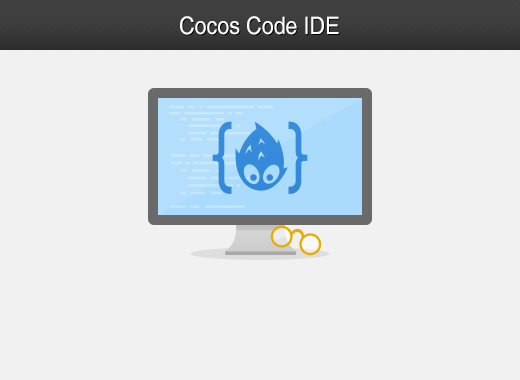
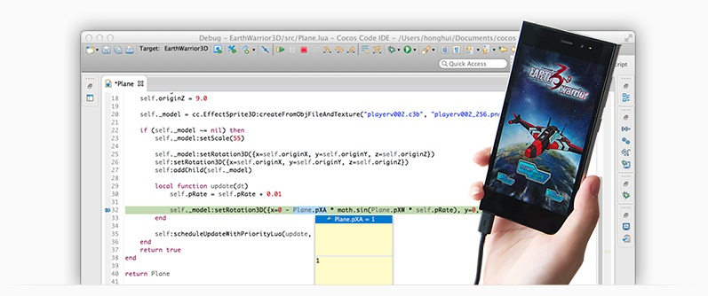
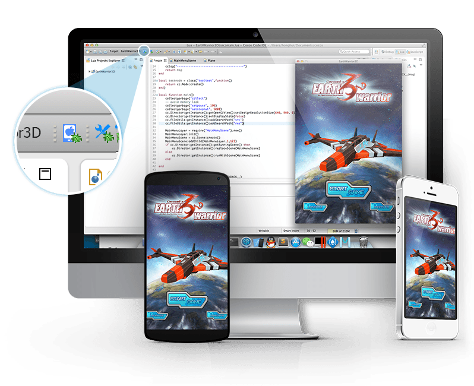
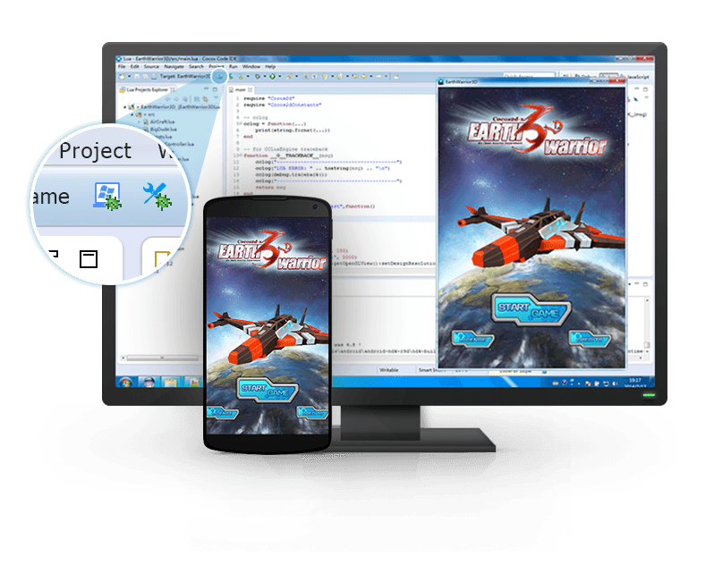
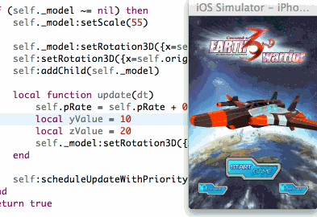
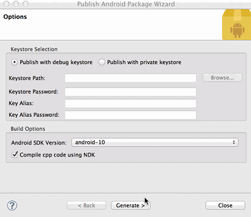
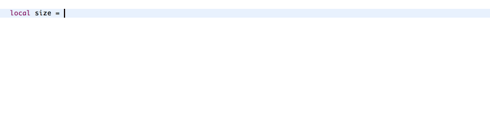
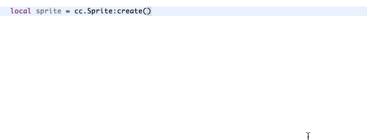
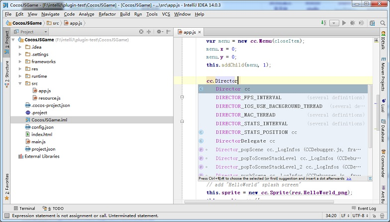

Cocos Code IDE 是一个基于 Eclipse 的跨平台 IDE，专门为 Cocos2d-x Lua & JavaScript 开发人员准备，通过 IDE 你可以方便的创建游戏工程、编写并且支持在不同平台上调试代码、实时查看代码被改变后的效果，最终直接发布成一个可上架的安装包。
Cocos Code IDE 填补了 Cocos2d Lua/JavaScript 调试工具的空白，你可以方便地设置断点、step in、step out、查看变量值等。支持的目标应用包括：Mac、Windows、iOS 模拟器/设备、Android 设备。
支持真机调试是必须的

在 Mac 平台，支持 Mac、iOS 真机设备、iOS 模拟器和 Android 设备。

在 Windows 平台，支持 Windows、Android 设备。

不需要在重编译代码上花费时间，甚至不需要重启游戏，你可以实时的检查代码变动对游戏的影响。

Cocos Code IDE 支持一键打包 Android APK、iOS IPA。如果你使用了正式的签名，Cocos Code IDE 可以帮你生成可上线的安装包。

支持 Lua/JavaScript 原生API，同时支持 Cocos2d-x/Cocos2d-JS 引擎绑定API/变量。

当你的代码需要引用资源的时候，Cocos Code IDE 能自动罗列出你最可能需要的文件路径/文件名，它能判别项目的 search paths。

继承了Cocos Code IDE上原有的功能，在编辑器上的体验有了质的提高，并且拥有了同webstorm一样强大的js编辑器，让您编写js代码更加得心应手，lua编辑器和代码调试性能也得到进一步地提升。编译打包功能也都移植到了上面。
